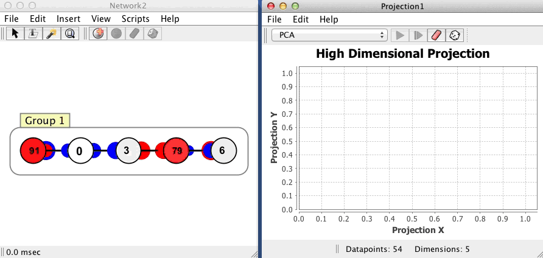
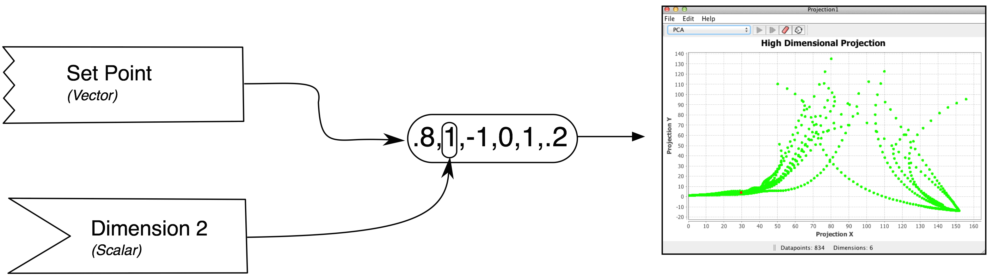

High Dimensional Projection Overview
The projection component is derived from a program called HiSee. HiSee is a high dimensional visualizer, it let's you "see" "hi"-dimensional data. It is basically a visual way of performing dimensionality reduction using a few techniques, primarily pca and Sammon Maps. It can be used to represent any high dimensional data, but in Simbrain it is primarily used to study the dynamics of a neural network.The projection component can take all the states (patterns of activation) that occur for the network, which exist in a high dimensional space, and project them down into two dimensions so that many of their geometric and topological properties are preserved. This gives users of Simbrain a way to visualize the dynamics of the network.
Getting started
To get a feel for how projection components work, invoke the script Simbrain Menu > Scripts > highDimensionalProjection.bsh. Run the network, and periodically randomize network activations by clicking in the network window, and pressing "N" and "R". This will give you a sense of how the projection component works. Each new state of the network is a separate dot in the component, and the red dot is the current state.
Component Panel
Add: Add a time series to the plot.
Remove: Remove a time series from the plot.
Clear Graph Data: Clears all data from the plot.
Show Graph Properties: Opens up properties menu for the plot.
Example
The projection component shown here begins with no datapoints, and then plots 54 points in a limit cycle, that occur in a network with 5 neurons. The network is in a kind of oscillatory state where it repeatedly visits the same 54 states in sequence. This dynamical pattern is directly visible in the projection, which shows a 2-dimensional projection of the 5 dimensional space. The example shows a case where the data have been removed (with the "eraser" button) and the simulation re-run, so that we can watch the limit cycle initially take form, and then watch the system cycle through that structure once. Each dot corresponds to one state of that network, where the red dot is current state, and the green dots are previous states (colors can be changed in the datapoint coloring dialog). Points that are close to each other in the projection component correspond to patterns of activity that are similar.

Choosing a projection method
Dimensionality reduction is a large, complex field. Numerous techniques exist for projecting high dimensional data to lower dimensional spaces that can be visualized. To get a feel for what a high dimensional object looks like, the user can choose different methods of visualizing it. Each will introduce its own distortions (there is no way to look directly at an object in more than 3 dimensions), but by using multiple methods intuition about that object can be gained.
The projection method is chosen in the main combo box, in the upper right of the component (it is set to PCA in the image above). Projection methods available in Simbrain are documented on the projection methods page. Different projection methods are used in different ways. PCA and Coordinate are fairly straightforward; just select those options and the data will immediately be projected. However, Sammon requires that an appropriate step size be set and that it be iterated. Triangulation and NN Subspace require that some points have already been added to the projection component, which are used to determine how subsequent points are plotted. If one of these is chosen and there are not sufficiently many points already in the plot, the warning icon will bes shown.
Setting up a new projection
When a projection component is first opened, and it has not been coupled to another component (usually a network), there are no dots, since no states have been sent to the projection component yet. An easy way to start is to set this up is to plot the states of a neuron group. Right click on a neuron group interaction box, and choose Send vector coupling to > Projection > Set Point.
Now, with each update of the workspace, state information is sent to the projection component. Each new state is displayed as a red dot. The set of dots that appear in the projection component window represent the states that have been visited by the associated network since it was first coupled to the projection component. This is a kind of picture of the history of a network's activity. As the network is updated the user can watch new dots appear as new states arise. In some cases there are no new states, and the network just repeatedly visits states it has visited before.
When Simbrain is running users can add one or more projection component windows, each of which projects some subset of the network's state variables to two dimensions. This allows users to independently study different aspects of the network component. For example, one projection component might represent the activity at the input nodes of a network, another might represent activity at the hidden nodes, another might represent the aggregate activity of the entire network, and another might represent the changing values of the network's weights as it learns.
Couplings

Data is fed to a projection component using couplings. The image here uses the graphical notation set up on the couplings page.
Vector couplings attach to a "set point" consumer that sets all 6 values of the projection consumer. This is the most natural way to set up a projection component. Typically this is done by coupling from a neuron group (see this page). When a vector coupling to a projection is created, the dimensionality of the projection component is reset automatically (though this is currently not reflected in the GUI until after the next workspace update)
Scalar couplings attach to a single "dimension" consumer. In this mode, the number of dimensions the projection accepts must be manually set using the set dimensions menu item. At each update, the "input vector" begins as a zero-vector and then the vector is filled with values from any dimension consumers that receive data